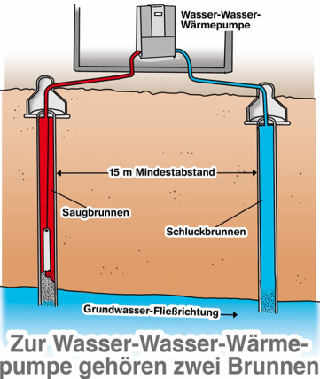

Die Wasser-Wasser-Wärmepumpe auch Grundwasser-Wärmepumpe genannt, gewinnt ihre Wärmeenergie aus dem Grundwasser mithilfe zwei Brunnen und benutzt diese thermische Energie zum Heizen. Sie lässt sich im reversiblen Betrieb im Sommer für passive Kühlung nutzen.
Grundwasser ist eine der wichtigsten Wasserquellen, die in den Zwischenräumen zwischen Sand, Erdreich und Gesteinskrümeln im Boden gespeichert wird und Wasserschichten, sogenannte Aquifere, bildet. Grundwasser gilt als Teil des natürlichen Wasserkreislaufs auf der Erde, da es bei Regen durch Erd- und Gesteinskrümel in den Boden sickert und durch poröses Gestein sickert, um einen Bereich zu erreichen, in dem es sich sammelt, und der Pegel des gesammelten Wassers dazwischen trennt das gesättigte Gebiet oder die Aquifer Zone. Die ungesättigte Zone oder die Vadose-Zone – ein feuchtes Gebiet direkt unter der Erdoberfläche, durch das Wasser fließt, aber es füllt nicht alle Räume zwischen den Felsen und dem Boden aus – wohin das Wasser tendiert sich nach unten durch die ungesättigte Zone zu bewegen, bis es die gesättigte Zone erreicht. In der gesättigten Region bewegt sich das Wasser je nach Wasserneigung oder Wasserdruckgradient horizontal und bewegt sich von der höchsten Neigung zur niedrigsten Neigung, und ein Teil dieses Wassers kann Filter während seiner horizontalen Bewegung außerhalb des Beckens, um sich dem Ozeanwasser anzuschließen.
Da die Wasser-Wasser-Wärmepumpe das Grundwasser als Energiequelle benutzt, muss das Wasser bestimmte Werte haben, damit der Brunnen, der Grundwasser ansaugt nicht beschädigt wird.
Um teure Schaden zu vermeiden, müssen bestimmte Werte geprüft werden, diese sind: pH-Wert, Leitfähigkeit, Trübung, Gesamthärte, Sauerstoff gelöst, Nitrat, Sulfat, Chlorid, Phosphat, Calcium, Kalium, Magnesium, Natrium, Strontium, Aluminium, Arsen, Bor, Barium, Cadmium, Chrom, Kupfer, Gelöstes Eisen, Mangan, Nickel, Blei, Uran und Zink.
Wasseranalyse Kosten liegen bei etwa 80 Euro.
Wasser-Wasser-Wärmepumpe ist sehr effizient, daher wird ihre Installation in einem Bestandsbau auch mit bis zu 50 Prozent der förderfähigen Kosten gefördert vom Bundesamt für Wirtschaft und Ausfuhrkontrolle. Aber dafür muss man eine Genehmigung für das Nutzen vom Grundwasser von Wasserbehörde erhalten. Das kann bis zu zwei Monate dauern und im Wasser- und Heilschutzgebiete kann man die Genehmigung nicht bekommen.
Bei Wasser-Wasser-Wärmepumpe muss man bis zu 20m tiefbohren, damit die Brunnen Grundwasser ansaugen können. Für Bohrung braucht man nochmal eine Genehmigung von Wasserbehörde.
Für eine Wasser-Wasser-Wärmepumpe braucht man zwei Brunnen, ein Sickerbrunnen und ein Saugbrunnen. Diese müssen 15m Mindestabstand haben.
